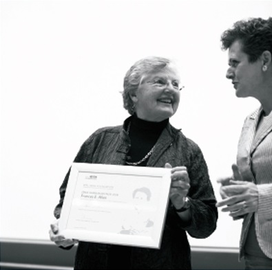

Frances Allen
A primeira mulher a ganhar o Turing Award
Frances Elizabeth "Fran" Allen (nascida em 04 de agosto de 1932) é uma americana cientista da computação e pioneira no campo da otimização de compiladores. Allen foi a primeira mulher do IBM Fellow e, em 2006, tornou-se a primeira mulher a ganhar o Turing Award.
“Esperava mais oportunidades para as mulheres na ciência, na computação e na engenharia”.
Sua História
Allen cresceu numa fazenda em Peru, Nova Iorque e graduou-se na The New York State College for Teachers (agora State University of New York at Albany) como Bacharel em Ciências Matemáticas em 1954.
Afundada em dívidas, ela começou a trabalhar na IBM em 15 de julho de 1957 e planejava ficar até seus empréstimos estudantis serem pagos, mas terminou trabalhando lá por todos os 45 anos de sua carreira.
"...Seus trabalhos de 1970, 'Control Flow Analysis' e 'A Basis for Program Optimization', estabeleceram 'intervalos' como o contexto para análise e otimização eficiente e efetiva do fluxo de dados. Seu trabalho de 1971 com Cocke, 'A Catalog of Optimizing Transformations', forneceu a primeira descrição e sistematização de transformações em optimização. Seus trabalhos de 1973 e 1974 sobre análise de fluxo de dados interprocedural estendeu a análise para programas inteiros. Seu trabalho de 1976 com Cocke descreve uma das duas principais estratégias de análise usadas em otimização de compiladores hoje em dia..."
Association For Computing Machinery (ACM), Parte da citação para o Prêmio Turing 2006
Dev: Jessiane Leal
Front-End
GitHub